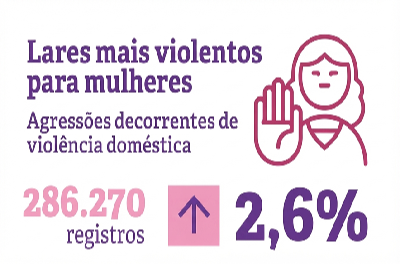
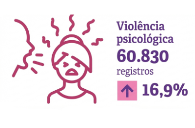
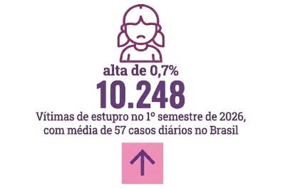
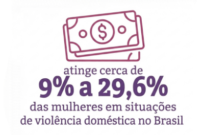
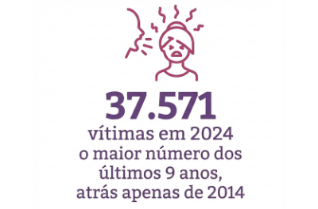
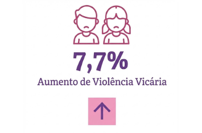
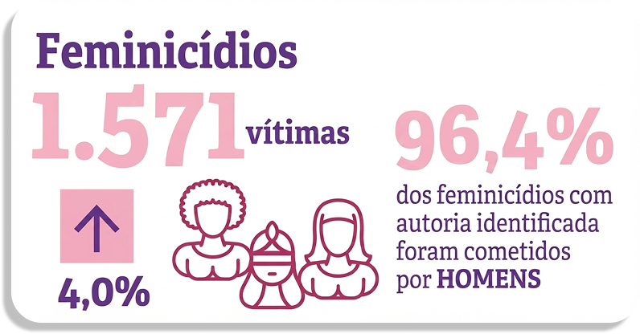

Tipos de violência
Física
- Tortura;- Espancamento;
- Estrangulamento ou sufocamento;
- Atirar objetos, apertar os braços;
- Lesões com objetos cortantes ou perfurantes;
- Ferimentos causados por queimaduras ou armas de fogo. Clique para ver os dados

Psicológica
- Chantagem e perseguição;- Isolamento de amigos e familiares;
- Controle de ações, crenças e decisões;
- Ridicularizar e desvalorizar a mulher;
- Ameaças, humilhação e contrangimentos. Clique para ver os dados

Sexual
- Assédio e exploração sexual;- Forçar matrimônio, gravidez ou aborto;
- Impedir o uso de métodos contraceptivos;
- Forçar prostituição por coação ou ameaça;
- Relação sexual forçada ou sem consentimento. Clique para ver os dados

Patrimonial
- Subtração de dinheiro ou bens;- Retenção de documentos pessoais;
- Destruição de objetos e bens pessoais;
- Controle total dos recursos financeiros. Clique para ver os dados

Moral
- Injúria: Ofender a dignidade ou o decoro;- Difamação: Ofender a reputação da mulher;
- Calúnia: Afirmar falsamente que cometeu crime;
- Expor a vida íntima em público ou nas redes. Clique para ver os dados

Vicária
- Afastar ou alienar os filhos da mãe;- Atingir a mulher por meio dos filhos;
- Ameaçar ou agredir familiares e amigos;
- Usar animais de estimação como forma de coação. Clique para ver os dados

Dados atualizados, publicados em julho de 2026 pelo Fórum Brasileiro de Segurança Pública, informam que houve um aumento nos casos de feminicídio em relação ao ano anterior.

O que você pode fazer?
A mudança começa com cada um de nós. Pequenas atitudes ajudam a combater a cultura da violência e a apoiar quem precisa.
- ✓ Acredite e apoie quem relata violência.
- ✓ Não minimize comentários ou comportamentos abusivos.
- ✓ Compartilhe informações sobre canais de ajuda.
- ✓ Denuncie situações de risco às autoridades.
- ✓ Respeite a autonomia da mulher em buscar ajuda.